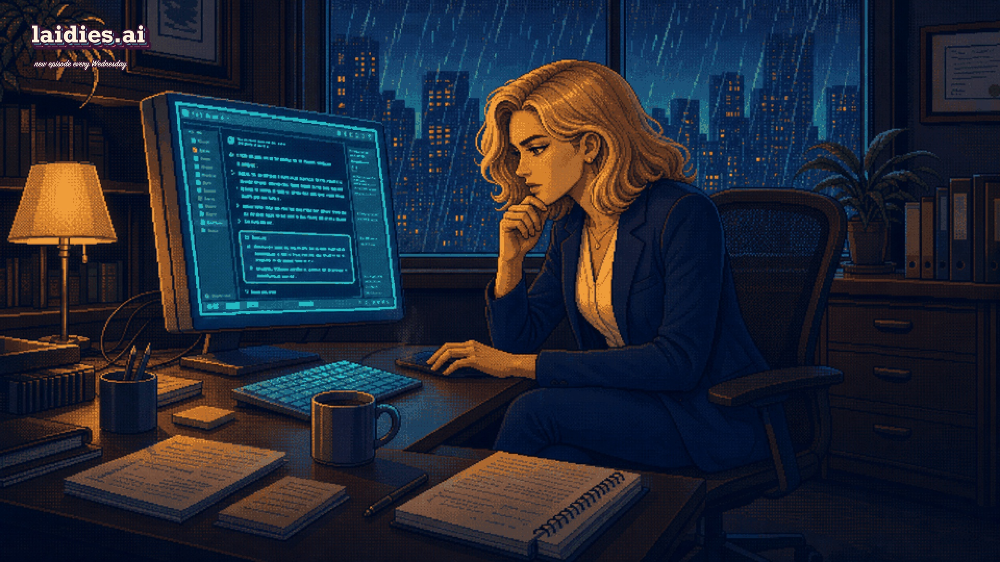
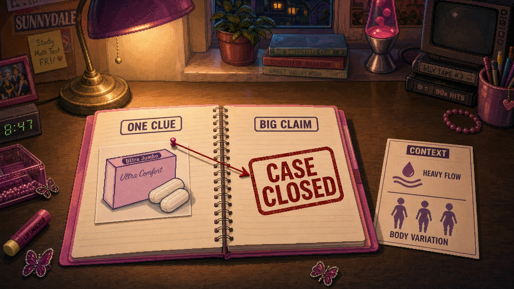
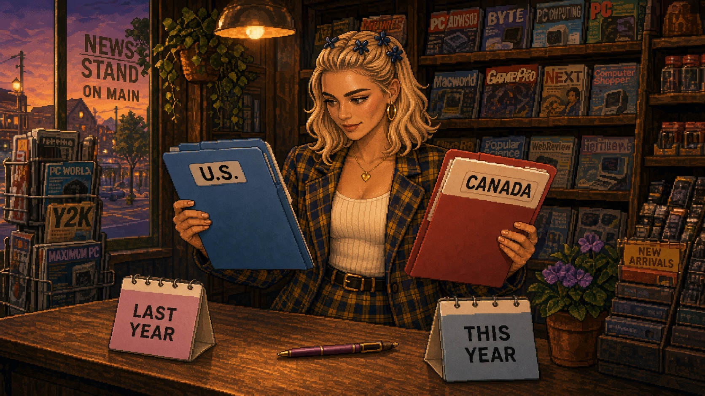
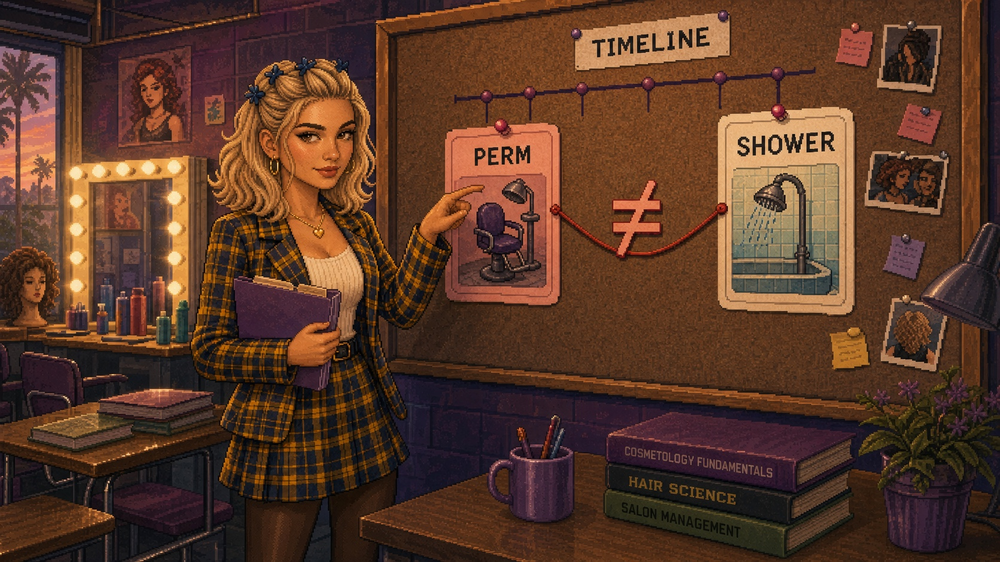
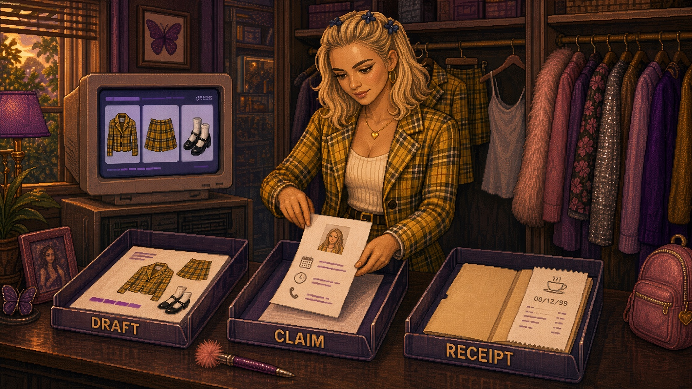
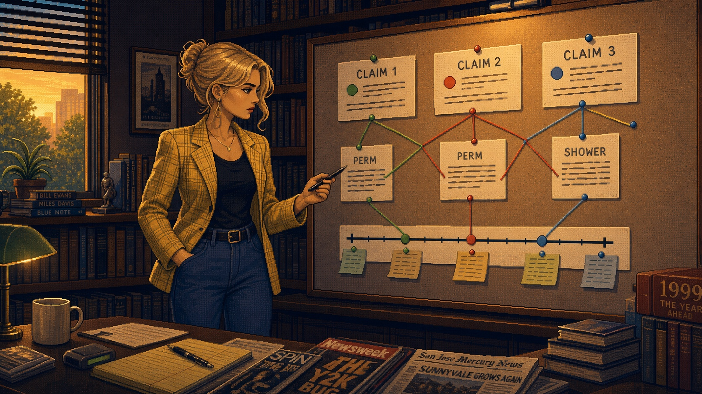
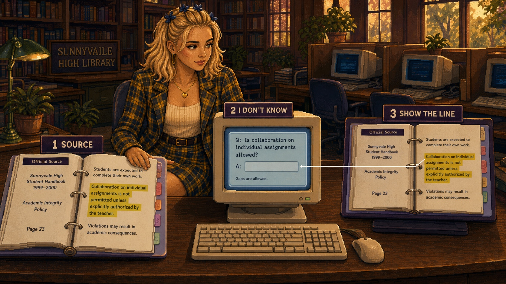

◀◀ Previously, on LAiDIES
She learned that prompting is delegation — that AI wasn't being mysterious, it was David Rose hearing "fold in the cheese." Once she got specific about audience, context, tone and what "good" looked like, the output changed. Same tool, better brief.

…if a paragraph can sound that sure of itself — hair done, makeup done, "per our discussion" and everything — how am I supposed to catch the one line in it that's quietly, completely wrong?
The first useful AI answer is a tiny office miracle. You paste in four days of messy meeting notes, and nine seconds later it's structured, calm, "per our discussion," two clicks from sending. You get comfortable fast. Embarrassingly fast.
Then one sentence walks out looking ready to leave your laptop. The draft says the client approved a July rollout — but you were in that meeting, and nobody approved anything. What was actually said: "July could work, if procurement clears by Friday." The machine took a maybe and gave it a lanyard.
It has Chutney-before-the-perm-timeline energy: confident, composed, and one tiny detail away from the alibi collapsing in court. Your job isn't to become scared of AI. Your job is to become harder to embarrass.
Confidence is not evidence
The one where she gets an answer with full Regina George confidence, almost uses it, then notices one tiny detail tugging at the corner of the story.
Betrayal as in: it helped her yesterday, so today she trusted the tone — and now one link, number, quote, date, or source is looking at her like Chutney Windham under cross-examination.
AI can sound right. Sounding right is not the same thing as being right. And before your name goes on it, you need to know which kind of answer you're holding.
The Burn Book Problem

The Burn Book didn't work because it was true — none of it was, and nobody checked. It worked because it had social authority. Same book, same marker, same devastating certainty. A rumor, a grudge, a wild guess, and something fully unhinged could all sit on the page with equal confidence.
That's why the Bethany Byrd moment is such a perfect tiny sourcing disaster. Somebody writes that Bethany must be lying about being a virgin — because she buys super-jumbo tampons. One box, and boom: a character verdict. Then the real explanation walks in, less scandalous and more specific: she's just got a heavy flow. That's not evidence. That's a clue in a Claire's headband, sprinting straight to a conclusion. One data point. No context. Enormous conclusion.
AI can do the same thing with better punctuation. It'll take a real source, an old source, a similar-but-not-this source, and an assumption it made because the pattern looked familiar — then hand you one smooth paragraph like everyone in it belongs together. That is the Burn Book Problem: unsupported information can look just as finished as supported information.
So the question isn't "can I use AI?" Yes. Use it. We are not here to churn butter by candlelight. The question is: which parts is it just drafting for you — and which parts are claims that need receipts before they borrow your name?
She Doesn't Even Go Here

A few wrong answers are easy — the product that doesn't exist, the answer that argues with itself. But the fake citation is dressed to pass: it looks like a real source, cited with the energy of "my boyfriend goes to another school," right up until you click it and it goes nowhere.
The sneakier answer isn't fully fake. It's misplaced — it brought the wrong ID but somehow made it past the door. A U.S. HR answer in a Canadian workplace. Last year's pricing page wearing this year's lip gloss. A meeting recap that turns "we talked about it" into "we decided." A policy answer that's technically true, except the exception is the part that matters.
That's when you stand up in the back in your blue hoodie and oversized sunglasses and yell: she doesn't even go here. It's not just a classic line — it's a quality-control standard. Before you use it, ask:
- Is this about our actual company, customer, tool, policy, market, date, and decision?
- Did AI say what I gave it, or quietly add what it inferred?
- What claim would make me look unprepared if it were wrong?
- What detail would make the story fall apart — and where's the receipt?
If you can't answer those, the output can stay in the prep pile. It's not ready to speak in the meeting.
Elle Woods Would Like To See The File

This is where Elle Woods becomes the patron saint of AI verification — not because she makes "being thorough" sound corporate, but because she spots the one detail everyone else treated like lip gloss and realizes it's holding up the whole alibi.
She asks. Chutney answers. Elle asks again, almost the same way; Chutney gives the same story; the room rolls its eyes. But Elle isn't checking whether Chutney can repeat herself. She's waiting for the detail that doesn't fit. Chutney says she was in the shower right after getting a perm. A perm has a timeline. Chutney's story does not.
Claim: she was in the shower. Timeline: right after a perm. Domain knowledge: you don't wash a fresh perm. Contradiction: the story collapses. Receipts: Elle has the file, the timing, and the tiny beauty-world rule nobody took seriously until it mattered.
With AI, the question isn't "does this sound smart?" Chutney sounded like she had an answer. She kept giving the answer. It still had a detail that couldn't survive contact with the timeline. If it says a policy changed — what date proves it? If it says a number increased — from what, over what timeframe, according to whom? Do not be Chutney on the stand. Be Elle with the timeline.
Cher's Closet Can Pick The Outfit. You Check The Dress Code.

Cher's closet computer was assembling looks in 1995, and somehow modern apps still make you hunt for the button you need. The closet knows the pieces. It does not know the situation you're walking into — that the meeting moved rooms, your boss is already annoyed, the client hates surprises.
AI is like that. It's excellent for shape. Let it draft the outline, turn notes into a first pass, make a checklist, give you questions to ask. But don't confuse a good outfit with the right place to wear it. Before the answer leaves your laptop, sort it into three piles:
- Draft: useful wording, structure, brainstorm, summary, checklist. (Can be fast.)
- Claim: names, dates, numbers, quotes, sources, legal / HR / privacy / security / finance details, customer commitments, policy interpretation. (Needs checking.)
- Receipt: the thing you can open, name, date, quote, or point to if someone asks.
Drafts can be fast. Claims need checking. Receipts are what keep you off the stand.
Chutney Can Say It Thrice

Asking AI "are you sure?" is like asking Regina George whether the Burn Book is peer reviewed. Bold choice, limited value. Sometimes the model catches the issue and corrects itself and we all briefly believe in growth. But sometimes it just gives you the same wrong answer in two popped-collar polos, only with the colors reversed. That's not verification — that's Chutney repeating the alibi.
Now, before someone adjusts her butterfly clip and says "but the tools are getting better": yes. They are. Newer tools can search, browse, cite, use documents you upload, and sometimes mark uncertainty more clearly. Source-connected systems beat a naked chatbot wandering the internet in platform sandals. That's real, and good.
"Sources attached" sounds very Elle with the file — until the file is still in Chutney's handwriting.
But better isn't solved. A 2026 Nature paper named why: the way we grade these models rewards a confident guess over an honest "I don't know," so they guess. Stanford's 2026 AI Index found something scarier — tell a top model something false that you seem to believe, and it will often just agree with you. And source-connected tools don't magically become source-perfect: Stanford researchers found legal AI tools with retrieval were less prone to hallucination than GPT-4, but still produced misleading or false information.
David, Meet Elle.

The serious guidance is surprisingly consistent — OpenAI's hallucination paper, Anthropic's guardrail guidance, Google's grounding guidance, and Stanford's source-checking work all point the same way: give the model boundaries, make uncertainty acceptable, separate claims from language, and verify the important parts outside the same chat. In normal-human terms, three moves — plus one rule over all of them.
Move one — give her the source. Don't ask AI what it remembers; hand it the material. Paste the policy, upload the file, link the official page, turn on search when freshness matters. Then set the boundary: "Answer only from the document I provided. If it isn't there, say so." Elle doesn't argue from memory — she walks in with the file. (And don't just tell it "don't hallucinate." That's asking the Ouija board to be detail-oriented.)
Move two — let her say "I don't know." Add the sentence most people never think to add: "If you aren't sure, say so. Don't guess to be helpful. Mark anything you inferred." That one line turns a confident guess back into an honest blank.
Move three — make her show the line. "Quote the exact sentence you relied on." If it can't point to the line, treat that claim like it showed up at Spring Fling with no student ID.
The rule over all three: no invented receipts. "If the receipt is missing, mark it [needs receipt]."
Then still check. The prompt lowers the odds of nonsense; it doesn't make the paragraph immune from cross-examination. We're calling it Prompt Like Elle — and the whole method lives on the Verification Rulebook shelf in the library, to pull down whenever an answer looks a little too sure of itself.
The Receipts Pass
The Episode gives you the rule: keep the useful draft, cross-examine the claims. The Bag is where you actually do it. Pick something low-risk enough to practice on — a meeting-prep note, a summary of a public page, a plain-language explanation, a draft reply — and verify three claims before it borrows your name.
Mini example. You ask AI to turn messy meeting notes into a client update. The notes said: "July could work if procurement clears by Friday. Training might move to phase two. Final approval: account owner to confirm." What AI spit out: "The client approved a July rollout and asked us to remove the training module from scope." Tempting. Tidy. Wearing a lanyard.
The receipt check catches it: the recap structure is a useful draft — but "approved," "July rollout," and "remove training" are claims, and not one of them has a receipt in those notes. The point isn't to turn every answer into a courtroom drama. It's to learn which parts can stay in draft mode and which parts need receipts.
Become harder to embarrass
Your job was never to become scared of AI. It's to keep the useful draft, cross-examine the claims, and never let an answer survive just because it sounded calm twice. Confidence is not evidence. Get it on the stand, then check the timeline — and your name stays yours.
Say it at happy hour
"Wait — why does it just make things up?"
Out of the box it only checks whether an answer is plausible, not whether it's true — so it'll set an unsupported sentence right next to a supported one, in the same confident handwriting. It's not lying; it just has no built-in "do we have receipts for this?" The fix isn't to fear it. It's to keep the draft, and check the claims before your name goes on them.
So remember, ladies…
Do not be Chutney on the stand. Be Elle with the timeline.
Got a sharper "remember, ladies" than that one? Post it in the rooms — our residents-only chats at the sorority house. Your Resident Card gets you in the door, and favourites get featured, with credit.
Next week on LAiDIES
Episode 04 · The Founding Mothers
She's talked to this thing every day for three weeks — and has no idea where it came from. So she goes looking for the origin story, and finds out it was women all along. See you next Wednesday, in SUNNYVAiLE.
Your scene · the try-on
The Receipts Pass
Pick something low-risk enough to practice on — a meeting-prep note, a summary of a public page, a plain-language explanation, a draft reply. Hand it to your AI tool with the three moves (give it the source, let it say "I don't know," make it quote the line), then verify three claims before it borrows your name. The copy-paste "Prompt Like Elle" move lives in the Study Pack.
Open the Verification Rulebook →The Vocab
HallucinationConfident, polished, and wrong — the Burn Book in a smooth paragraph.+
When AI produces something confident and finished-looking but factually wrong or made up. It's not lying — lying takes intent; it just has no built-in "do we have receipts for this?" check, so an unsupported sentence can sit right next to a supported one in the exact same handwriting. The Burn Book from Mean Girls: some entries accurate, some fabricated, all equally sure of themselves.
AssumptionReal information in the wrong room — plausible, but it doesn't even go here.+
The sneaky wrong answer that isn't fake — it's misplaced. A US HR answer in a Canadian workplace; last year's pricing wearing this year's lip gloss; "we talked about it" promoted to "we decided." Plausible is not the same as relevant. The quality-control check: is this about our actual company, customer, policy, date, and decision?
VerificationPutting a claim on the stand: source, timeline, contradiction, receipt.+
Checking the important parts of an answer outside the same chat before your name goes on them. Give the model the source, let it say "I don't know," make it quote the exact line it relied on — then confirm the claim against the real thing. Don't be Chutney repeating the alibi; be Elle with the file and the timeline.
 Cher Horowitz
Cher Horowitz Regina George
Regina George